SIGzoning¶
Guía de usuario de SIGzoning¶
1 Introducción¶
SIGzoning es una herramienta computacional que combina técnicas de análisis espacial con métodos de toma de decisiones y geovisualización para realizar el análisis de aptitud del territorio.
SIGzoning integra más de aptitud sectoriales en un análisis multiobjetivo de clasificación numérica y ganancia de homogeneidad para identificar grupos de aptitud.
La clasificación numérica utiliza un método geoespacial recursivo politético-divisivo acoplado a técnicas de visualización que faciliten la traducción y comunicación de resultados.
1.1 ¿Por qué es necesario SIGzoning?¶
SIGzoning es necesario durante la realización de estudios de ordenamiento ecológico, en la etapa de diagnóstico, para minimizar los conflictos sectoriales que resultan de actividades incompatibles en el territorio.
2 Organización del manual¶
Este manual tiene el propósito de mostrar el uso del módulo SIGzoning mediante (1) la explicación de todas las funciones de la plataforma (Sección 3. Organización de la Interfaz) y (2) la ilustración de un ejemplo de uso (Sección 4. Ejemplo de uso). Asimismo, se incluye bibliografía relevante como complemento teórico.
3 Organización de la interfaz¶
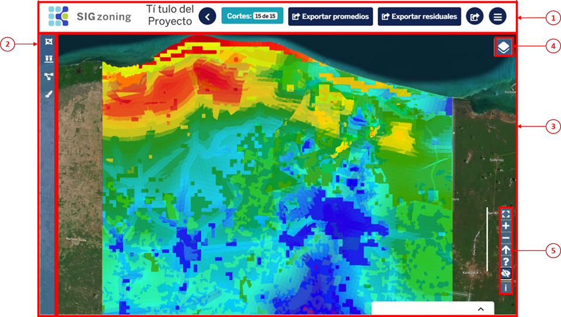La interfaz está organizada en las siguientes secciones:  el encabezado contiene al título y las funciones básicas,
el encabezado contiene al título y las funciones básicas,  en el panel izquierdo se ubica la barra de herramientas, y
en el panel izquierdo se ubica la barra de herramientas, y  el visualizador de capas incluye
el visualizador de capas incluye  los ajustes de despliegue de capas y
los ajustes de despliegue de capas y  los ajustes de visualización.
los ajustes de visualización.
3.1 Funciones básicas¶
Las funciones básicas son seis: botón de inicio, exportar resultados, exportar residuales, exportar promedios, número de cortes y regresar.
3.1.1 Botón de inicio¶
Al hacer clic en el botón de inicio  , se despliega una ventana con tres opciones: redirecciona al inicio (home) de la plataforma SIGplanning, muestra el nombre del usuario activo y cierra la sesión del usuario activo.
, se despliega una ventana con tres opciones: redirecciona al inicio (home) de la plataforma SIGplanning, muestra el nombre del usuario activo y cierra la sesión del usuario activo.
3.1.2 Exportar resultados¶
Al hacer clic en el botón de exportar  , se descarga un archivo en formato .zip, el cual contiene la capa ráster .tif y el metadato asociado en formato .xml, producto del uso del SIGzoning. Para que se genere el mapa, el usuario debe haber seleccionado los cortes y generado el mapa de grupos de cortes (ver apartado 3.5.1.1).
, se descarga un archivo en formato .zip, el cual contiene la capa ráster .tif y el metadato asociado en formato .xml, producto del uso del SIGzoning. Para que se genere el mapa, el usuario debe haber seleccionado los cortes y generado el mapa de grupos de cortes (ver apartado 3.5.1.1).
3.1.3 Exportar residuales¶
Al hacer clic en el botón de exportar residuales , se descarga un archivo .xls, con los valores de los residuales de los grupos de cortes elegidos (ver apartado 3.5.1.1 y 3.5.2.2).
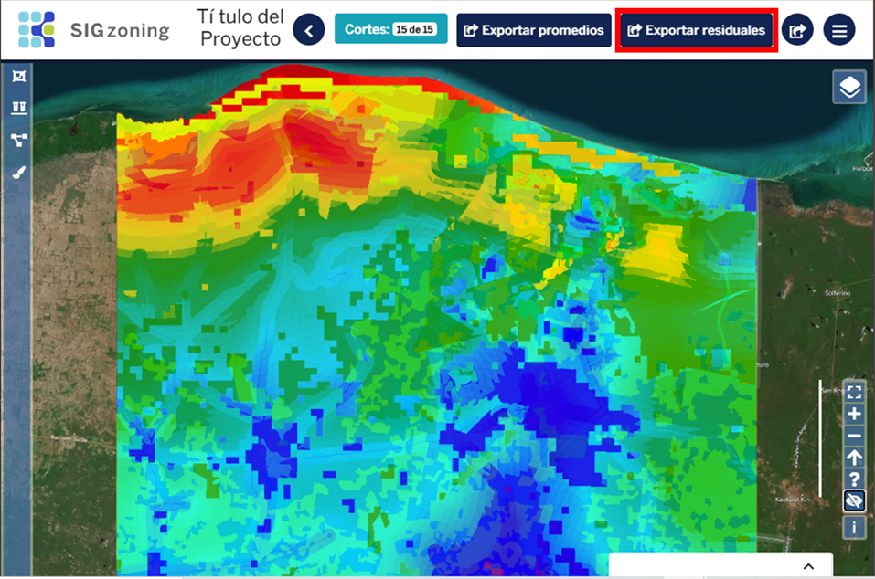{kind=link}
3.1.4 Exportar promedios¶
Al hacer clic en el botón de exportar promedios , se descarga un archivo .xls, con los valores de los promedios de los grupos de cortes elegidos por sector (ver apartado 3.5.1.1 y 3.5.2.2).
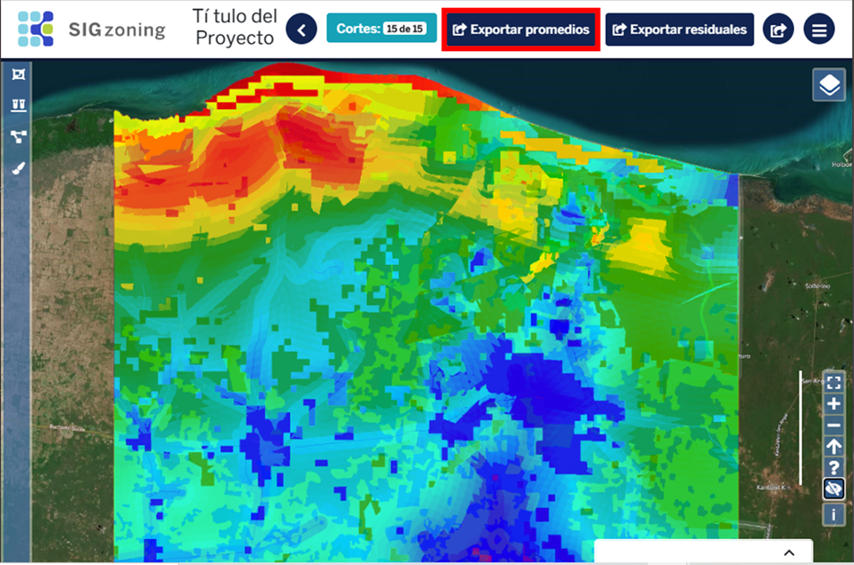{kind=link}
3.1.5 Número de cortes¶
El ícono 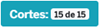 muestra el nivel de avance en la clasificación numérica. SIGzoning permite el análisis de resultados una vez terminado 15 cortes (o menos si los insumos no permiten una desagregación mayor).
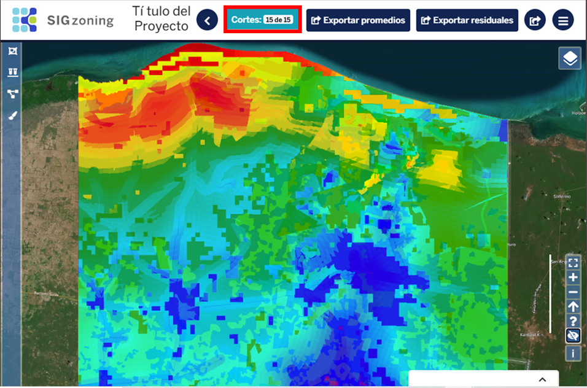{kind=link}
3.1.6 Regresar¶
SIGzoning tiene dos opciones para regresar al catálogo de proyectos y al resto de los módulos de SIGplaning: el botón regresar  y el ícono del módulo .
y el ícono del módulo .
{kind=link}
3.2 Visualizador de capas¶
En el visualizador de capas se muestran los resultados de SIGzoning, así como, los ajustes de despliegue de capas y los ajustes de visualización. En el visualizador se puede mover el mapa, rotar el mapa y hacer acercamientos.
3.2.1 Mover el mapa¶
Al hacer clic en cualquier parte del visualizador de capas, mover el ratón en cualquier dirección hasta que el mapa esté en la ubicación deseada.
3.2.2 Rotar el mapa¶
Al hacer clic en cualquier parte del visualizador de capas, sin soltar el ratón, oprimir la tecla Shift y rotar la capa hasta llegar a la orientación deseada.
Al rotar el mapa, aparece el botón del norte geográfico rotado  . Al hacer clic sobre el norte geográfico, se reposiciona el mapa a la orientación original.
. Al hacer clic sobre el norte geográfico, se reposiciona el mapa a la orientación original.

3.2.3 Hacer acercamientos¶
Al hacer clic en cualquier parte del visualizador de capas, mover la barra de desplazamiento del ratón para acercarse o alejarse.
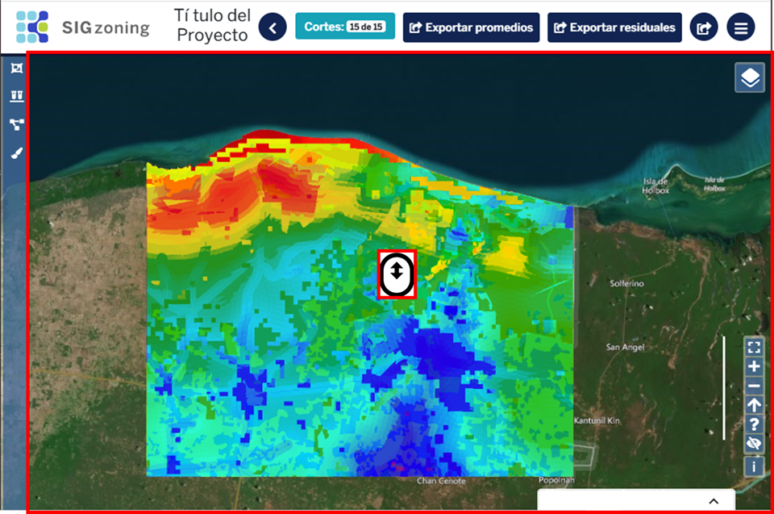3.2.4 Visualizar valores de los grupos de corte¶
Al hacer clic en un pixel del mapa de grupo del proyecto, se despliega una ventana con los valores de los pixeles de las capas de aptitud de las actividades seleccionadas por grupo de corte elegido (ver apartado 3.5.1.1).
3.3 Ajustes de despliegue de capas¶
Los ajustes de despliegue de capas  permiten activar o desactivar capas, cambiar el orden de sobreposición de las capas, cambiar la opacidad de las capas y cambiar el mapa base.
permiten activar o desactivar capas, cambiar el orden de sobreposición de las capas, cambiar la opacidad de las capas y cambiar el mapa base.
3.3.1 Activar o desactivar capas¶
Al hacer clic sobre las casillas de verificación  en la sección de ajustes de despliegue, se activan o desactivan las capas deseadas.
en la sección de ajustes de despliegue, se activan o desactivan las capas deseadas.
3.3.2 Cambiar el orden de sobreposición de las capas¶
Para cambiar el orden de sobreposición de las capas, mantener oprimido el botón izquierdo del ratón sobre las flechas  que aparecen a la derecha del panel y desplazar las capas hacia abajo o arriba conforme al orden deseado.
que aparecen a la derecha del panel y desplazar las capas hacia abajo o arriba conforme al orden deseado.
3.3.3 Cambiar la opacidad de las capas¶
Al hacer clic sobre el control deslizante de opacidad de capas  , desplazar a la derecha o izquierda hasta llegar a la opacidad deseada.
, desplazar a la derecha o izquierda hasta llegar a la opacidad deseada.
3.3.4 Cambiar la capa base¶
SIGIndex tiene cuatro opciones de capas base: OpenLayer, Stamen, Mapa, Satelite, para cambiar la capa base oprimir el botón de opción  para seleccionar el mapa base de su preferencia.
para seleccionar el mapa base de su preferencia.
Nota: La opción predeterminada es satélite.
3.4 Ajustes de visualización¶
La sección de ajustes de visualización se compone de siete botones: cambiar al visualizador de capas en pantalla completa, acercar el mapa, alejar el mapa, reajustar el norte geográfico, ver la guía rápida de controles de despliegue  ver u ocultar gradientes de capas y ver la licencia de la capa base.
ver u ocultar gradientes de capas y ver la licencia de la capa base.
{kind=link}
3.4.1 Poner el mapa en pantalla completa¶
Al hacer clic en el botón de pantalla completa  , se muestra el área de visualización en la pantalla sin el resto de las secciones.
, se muestra el área de visualización en la pantalla sin el resto de las secciones.
Para salir de la pantalla completa, volver a oprimir el botón de los ajustes de visualización o la tecla Esc.
3.4.2 Acercarse o alejarse del mapa¶
Al hacer clic sobre el botón de acercar  , se aumenta el zoom en el visualizador de capas.
Al hacer clic sobre el botón de alejar
, se aumenta el zoom en el visualizador de capas.
Al hacer clic sobre el botón de alejar  , se disminuye el zoom en el visualizador de capas.
, se disminuye el zoom en el visualizador de capas.
3.4.3 Ajustar el norte del mapa¶
Al hacer clic en el botón de norte geográfico  , se reajusta la orientación del visualizador de capas a la posición original.
, se reajusta la orientación del visualizador de capas a la posición original.
3.4.4 Guía rápida de ajustes de visualización¶
Al hacer clic en el botón de guía rápida de controles de despliegue  , se despliega una ventana con dos opciones: rotar el mapa y hacer zoom a una ventana específica.
, se despliega una ventana con dos opciones: rotar el mapa y hacer zoom a una ventana específica.
3.4.5 Ocultar gradientes de capas¶
Al hacer clic en el botón mostrar/ocultar gradientes de capas , el fondo del botón cambia a verde desplegando la ventana de gradientes .
{kind=link}
{kind=link}
3.5 Barra de herramientas¶
3.5.1 Cortes¶
Al hace clic en el botón de Cortes , se despliega una ventana con dos botones: Ver mapa de grupos del proyecto y Ver gráficas de residuales del proyecto, y el listado de los cortes: Mapas generados.
{kind=link}
3.5.1.1 Seleccionar mapas de los cortes¶
Al hacer clic sobre un número se muestra el resultado de los cortes (la clasificación numérica a ese nivel) en dos grupos 1 y 2.
3.5.1.2 Ver mapa de grupo de proyectos¶
Al hacer clic en el botón de mapa de grupo del proyecto , se despliega el mapa de grupos vigente. El mapa de grupos vigente es el que resulta del análisis inicial o de la selección específica de agregados (ver sección 3.5.1.1).
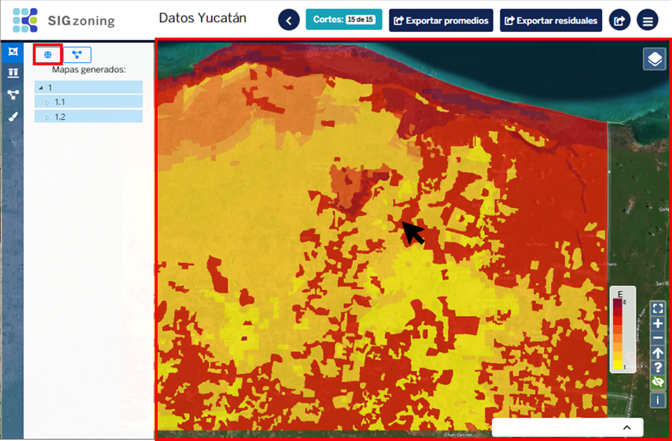{kind=link}
3.5.1.3 Ver gráficas de residuales del proyecto¶
Al hacer clic en el botón de gráficas de residuales del proyecto , se abre automáticamente la herramienta de Residuales de gower y se despliegan las gráficas de los residuales del proyecto. Al hacer clic en el control deslizante hacia arriba y abajo se pueden ver todas las gráficas generadas por cada grupo seleccionado. Los residuales mostrados corresponden a los que resultan del análisis inicial o del conjunto de agregados seleccionados en la herramienta Análisis de cortes . Al hacer clic en el botón Actualizar residuales , se actualizan los residuales de una nueva selección de agregados.
{kind=link}
{kind=link}
{kind=link}
3.5.2 Análisis de cortes¶
Al hacer clic en el botón de Análisis de cortes , se despliega una ventana con cuatro botones: Evaluar selección, Ver mapa de grupos de la evaluación, Ver gráficas de residuales de la evaluación, Aplicar configuración y el listado de selección de cortes/agregados a evaluar.
3.5.2.1 Evaluar selección¶
Al hacer clic en la pestaña  se despliega los diferentes niveles de cortes y agregados resultantes. Para seleccionar los agregados a evaluar, hacer clic en el botón 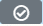 de cada nivel, los cuales se van marcando con el botón .
Al volver hacer clic en el botón se deselecciona un agregado. Al hacer clic en el botón evaluar selección , el conjunto de agregados seleccionados se convierte en el mapa de grupos vigente.
Al hacer clic en el botón mapa de grupos de evaluación , se despliega el mapa de grupos (si es que no está desplegado). Al hacer clic en el botón gráficas de residuales de la evaluación , se actualizan los residuales de gower de los agregados seleccionados y se pueden analizar (ver sección 3.5.1.3). Al hacer clic en el botón aplicar configuración 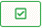, se guarda la selección de agregados en el servidor y se actualizan los archivos de salida (mapa de grupos, promedios de aptitud por grupo y residuales de gower).
se despliega los diferentes niveles de cortes y agregados resultantes. Para seleccionar los agregados a evaluar, hacer clic en el botón 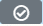 de cada nivel, los cuales se van marcando con el botón .
Al volver hacer clic en el botón se deselecciona un agregado. Al hacer clic en el botón evaluar selección , el conjunto de agregados seleccionados se convierte en el mapa de grupos vigente.
Al hacer clic en el botón mapa de grupos de evaluación , se despliega el mapa de grupos (si es que no está desplegado). Al hacer clic en el botón gráficas de residuales de la evaluación , se actualizan los residuales de gower de los agregados seleccionados y se pueden analizar (ver sección 3.5.1.3). Al hacer clic en el botón aplicar configuración 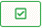, se guarda la selección de agregados en el servidor y se actualizan los archivos de salida (mapa de grupos, promedios de aptitud por grupo y residuales de gower).
{kind=link}
{kind=link}
{kind=link}
{kind=link}
3.5.2.2 Exportar resultados¶
Al hacer clic en el botón de aplicar configuración en la sección de Análisis de cortes , se guardan los resultados de los agregados seleccionados en el servidor y se puede exportar los promedios de grupos de aptitud por sector, los residuales de gower y la capa de grupos de aptitud.
3.5.3 Paleta de colores¶
Al hacer clic en el botón  se despliega una ventana que muestra la gama de color en la que aparecen las capas de las actividades invitando a seleccionar un color.
se despliega una ventana que muestra la gama de color en la que aparecen las capas de las actividades invitando a seleccionar un color.
3.5.3.1 Cambiar el color de las capas¶
Al hacer clic en el botón aparece una lista de despliegue con 12 paletas de colores a elegir, al hacer clic en el control deslizante hacia arriba y abajo se puede seleccionar una paleta para representar los valores de la capa en el visualizador.